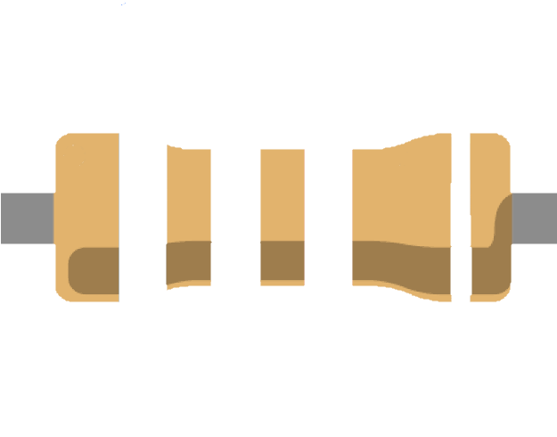

{% extends "layout.html" %}

{% block content %}
{% from "_macros.html" import render_colores%}
{% from "_macros.html" import render_coloresTolerancia%}
	<h1>Calculadora de resistencias</h1>
	<form method="POST" action="/calculate" novalidate {{csrf_token}}>
        <input type="hidden" name="csrf_token" value="{{csrf_token()}}">
		<center>
            
        </center>
		<div style="display: inline-block; position: relative; left: 536px; bottom: 163px; width: 26px; height: 91px; background-color: {{primerColor}};"></div>
        <div style="display: inline-block; position: relative; left: 556px; bottom: 172px; width: 26px; height: 73px; background-color: {{segundoColor}}"></div>
        <div style="display: inline-block; position: relative; left: 577px; bottom: 172px; width: 26px; height: 73px; background-color: {{tercerColor}}"></div>
        <div style="display: inline-block; position: relative; left: 624px; bottom: 163px; width: 15px; height: 91px; background-color: {{cuartoColor}}"></div>  

        <div>
            <label style="display: inline-block; position: relative; left: 230px;">Primer Banda</label>
            <label style="display: inline-block; position: relative; left: 360px;">Segunda Banda</label>
            <label style="display: inline-block; position: relative; left: 485px;">Tercer Banda</label>
            <label style="display: inline-block; position: relative; left: 620px;">Cuarta Banda</label>
        </div>
<center>

    {{ render_colores("primerBanda", primero) }}
    {{ render_colores("segundaBanda", segundo) }}
    {{ render_colores("tercerBanda", tercero) }}
    {{ render_coloresTolerancia("cuartaBanda", cuarto) }}
    
<label>Valor de la resistencia: {{total}}</label>

<label>Mínimo: {{minimo}}</label>

<label>Máximo: {{maximo}}</label>


</center>
</form>
{% endblock %}  